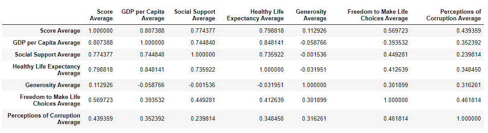
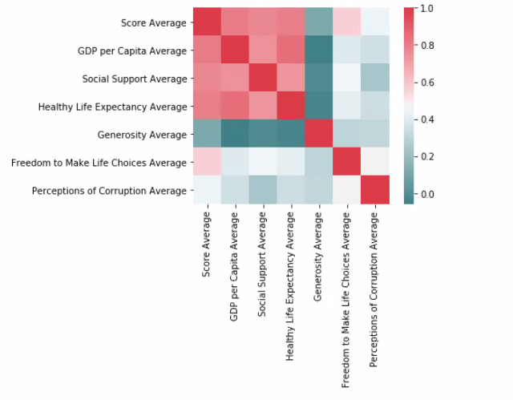
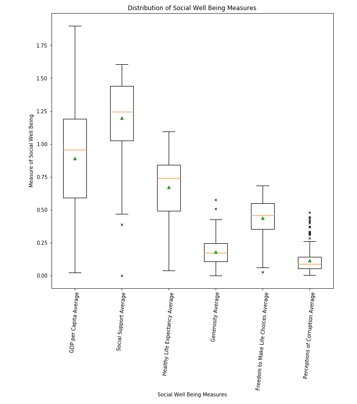

2. Which of the measures of SWB (i.e., social support, healthy life expectancy, generosity, freedom to make life choices, GDP per capita, and perception of corruption) are most highly correlated with a higher happiness score?
We found that GDP had a highest correlation (at .807), Healthy Life Expectancy a close second (at 0.798), and Social Support was third (at 0.774)
Plots: Pearson Comparison Chart* (img 2.1). Other visualizations to show correlation and outliers (imgs 2.2, 2.3)
*Pearson's correlation coefficient (r) is a measure of the strength of the association between the two variables.

2.1


2.2
2.2

2.3
2.3